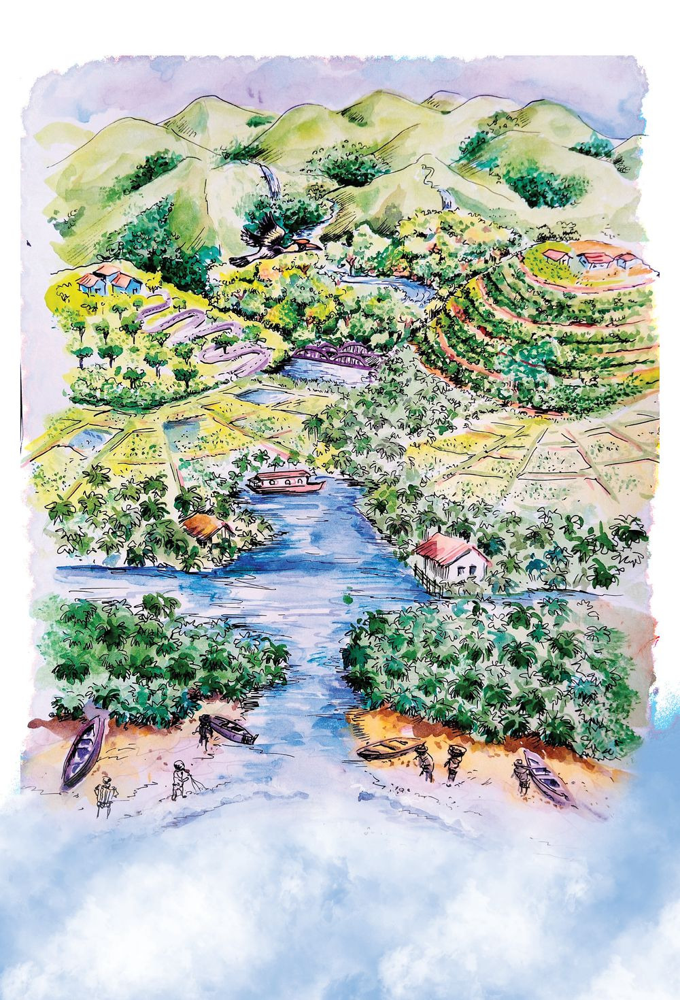

ടീച്ചർക്ലാസിലെത്തിയപ്പോോൾ സമതയും സയാനും തമ്മിൽ തർക്കം
നടക്കുകയായിരുന്നു.
സയാൻ : ഭൂമി പരന്നതുതന്നെയാണ്, എനിക്കുറപ്പാ...
സമത
: ഏയ്, അങ്ങനെയല്ല... പരന്നതെങ്കിൽഭൂമിക്ക് ഒരു
അതിര് വേണ്ടേ?
സയാൻ : കടലല്ലേ ഭൂമിയുടെ അതിര്?
ടീച്ചർഅവരുടെ സംശയത്തിലിടപെട്ടു.
എങ്കിൽ കടലിലൂടെ വീണ്ടും മുന്നോോട്ടുപോോയാലോോ?
അങ്ങനെ യാത്ര തുടർന്നുകൊൊണ്ടേയിരുന്നാൽഅത്
എവിടെച്ചെന്നായിരിക്കും അവസാനിക്കുക?
ഭൂമിയെ മുഴുവനായിക്കാണണമെങ്കിൽ നമ്മൾ എവിടെവരെ യാത്ര
ചെയ്യണം?
ഒരു പ്ലാസ്റ്റിക് പന്ത് എടുത്ത്
അതിൽ ഒരു ചതുരം
അടയാളപ്പെടുത്തുക.
ആ ഭാഗം മുറിച്ചെടുക്കുക.
മുറിച്ചെടുത്ത ഭാഗം ഉരുണ്ടതോോ പരന്നതോോ?
പന്ത് ഭൂമിയും, ചതുരം നമ്മുടെ
പ്രദേശവുമാണെങ്കിൽ ഭൂമിയുടെ ഗോോളാകൃതി
കാഴ്ചയിൽനമുക്ക് അനുഭവപ്പെടാത്തതിന്റെ
കാരണമെന്തെന്ന് പറയാമോോ?
ഉരുണ്ട
ആകൃതിയുള്ള
വസ്തുക്കളെ
ഗോോളം എന്നു
വിളിക്കാം.
മഗല്ലന്റെ യാത്ര
ഭൂമി ഉരുണ്ടതാണെന്ന് ചില
കപ്പൽയാത്രക്കാർ വളരെ മുമ്പേ
മനസ്സിലാക്കിയിരുന്നു. അവരിൽ
ആദ്യയത്തെയാളാണ് ഫെർഡിനന്റ്
മഗല്ലൻ. മഗല്ലനും കൂട്ടരുംം ഒരു
പായ്ക്കപ്പലിൽ യാത്രതുടങ്ങി. ഒരേ
ദിശയിലാണ് അവർ സഞ്ചരിച്ചത്.
യാത്ര വളരെ പതുക്കെയായിരുന്നു.
വർഷങ്ങൾക്കൊൊടുവിൽആ
പായ്ക്കപ്പൽയാത്ര തുടങ്ങിയ
സ്ഥലത്തുതന്നെ എത്തിച്ചേർന്നു.
ഭൂമിയുടെ ചെറുമാതൃക ഉണ്ടാക്കിയാൽ അത് എങ്ങനെയിരിക്കും?
കൂട്ടുകാരേ,
ഞാനാണ് ഗ്ലോോബ്.
ഭൂമിയുടെ ഒരു ചെറിയ
മാതൃക. ഭൂമിയെക്കുറിച്ച്
പഠിക്കാൻ എന്നെ
ഉപയോോഗിക്കൂ.
ഇനി നമുക്ക് ഗ്ലോോബ് നിരീക്ഷിച്ചാലോോ?
ഗ്ലോോബിൽഏറ്റവും കൂടുതലായി കാണുന്ന നിറമേതാണ്?
ഇത് എന്തിനെയാണ് സൂചിപ്പിക്കുന്നത്?
മറ്റു നിറങ്ങളിൽ കാണുന്ന ഭാഗങ്ങളോോ?
കരഭാഗമാണോോ കടലാണോോ കൂടുതൽ?
ഗ്ലോോബിൽ നീലനിറത്തിൽ ചിത്രീകരിച്ചിരിക്കുന്നത് കടലാണ്.
മറ്റു പലനിറങ്ങളിലായി കരഭാഗങ്ങളുംം ചിത്രീകരിച്ചിരിക്കുന്നു.
കരഭാഗത്തിന്റെ ഇരട്ടിയിലധികം കടലുണ്ട്.
ആകാശം നോോക്കാം
നിങ്ങൾ ആകാശത്തേക്ക് നോോക്കിയിട്ടില്ലേ?
എന്തെല്ലാം കാഴ്ചകളാണ് ആകാശത്തുള്ളത്?
ആകാശം എവിടെയെല്ലാം കാണുന്നുണ്ട്?
തലയ്ക്കുമുകളിൽ മാത്രമാണോോ ആകാശം കാണുന്നത്?
സ്കൂൾ മൈതാനത്തിന് നടുവിൽ ചെന്ന് ആകാശം നിരീക്ഷിച്ചുനോോക്കൂ.
നിങ്ങളുടെ ഏതെല്ലാം വശങ്ങളിൽ ആകാശം കാണുന്നുണ്ട്?
ഭൂമിയുടെയും ആകാശത്തിന്റെയും ചിത്രീകരണം നിരീക്ഷിക്കൂ.
ആകാശം ഭൂമിയുടെ ഏതെല്ലാം ഭാഗങ്ങളിൽ കാണപ്പെടുന്നുണ്ട്?
ആകാശത്ത് ഭൂമിയെക്കൂടാതെ മറ്റു പല ഗോോളങ്ങളുമുണ്ടല്ലോോ.
ഏതൊൊക്കെയാണവ? പദസൂര്യയൻ പൂർത്തീകരിക്കൂ.
ഭൂമി
പകൽ നക്ഷത്രങ്ങളെവിടെ?
പകലെന്താ
ടീച്ചർ
നക്ഷത്രങ്ങളെ
കാണാത്തത്?
നമുക്കൊൊരു
പരീക്ഷണ
ത്തിലൂടെ
കണ്ടെത്താം.
വെളുപ്പ് നിറത്തിലുള്ള ഒരു ചെറിയ
എൽ.ഇ.ഡി. സൂര്യയപ്രകാശമുള്ള
തുറസ്സായ സ്ഥലത്തുവച്ച് പ്രകാശിപ്പിക്കുക.
വെളിച്ചം നിരീക്ഷിക്കുക. ഇതേ പ്രവർത്തനം
സൂര്യയനും
അടച്ചിട്ട ഇരുട്ടുമുറിയിൽവച്ച് ചെയ്യുക.
ഒരു
വെളിച്ചത്തിലുള്ള വ്യയത്യാസം നിരീക്ഷിക്കുക.
നക്ഷത്രമാണ്
.
എന്തുമാറ്റമാണ് കണ്ടെത്തിയത്?
ഭൂമിയോോട് ഏറ്റവും
തുറസ്സായ സ്ഥലത്ത് എൽ.ഇ.ഡി.
അടുത്തുള്ള
പ്രകാശിക്കുന്നത് കാണാൻ പ്രയാസമല്ലേ?
നക്ഷത്രം.
കാരണമെന്തായിരിക്കും?
പകൽസമയം സൂര്യയന്റെ പ്രകാശംകൊൊണ്ടാണ്
നക്ഷത്രങ്ങളെ കാണാൻ സാധിക്കാത്തത്.
സൂര്യയൻ
സൂര്യയനിൽ നിന്നുള്ള പ്രകാശമാണല്ലോോ ഭൂമിയിൽ ലഭിക്കുന്നത്. ഉദിക്കു
കയും അസ്തമിക്കുകയും ചെയ്യുന്ന സമയങ്ങളിൽ സൂര്യയനെ നിങ്ങൾ
കണ്ടിട്ടില്ലേ? ഏതാകൃതിയിലാണ് സൂര്യയനെ കാണാറുള്ളത്?
ഭൂമിയെ അപേക്ഷിച്ച് സൂര്യയൻ വളരെ വലിയ ഗോോളമാണ്.
വളരെ ദൂരെയായതിനാലാണ് ഭൂമിയിൽനിന്ന് നോോക്കുമ്പോോൾ
നമുക്ക് സൂര്യയൻ ചെറുതായി തോോന്നുന്നത്.
119
ഭൂമിക്ക് ഏറ്റവുമടുത്ത് സ്ഥിതിചെയ്യുന്ന ആകാശഗോോളമായ ചന്ദ്രന് സ്വവയം
പ്രകാശിക്കാൻ കഴിയില്ല. സൂര്യയന്റെ പ്രകാശം പ്രതിഫലിപ്പിക്കുന്നതാണ്
ചന്ദ്രന്റെ തിളക്കത്തിനും രാത്രിയിലെ നിലാവിനും കാരണം.
അപ്പോോൾ
രാത്രിയിലും വെളിച്ചം
നല്കുന്നത്
സൂര്യയൻ തന്നെ!
സൂര്യയനെന്തു വലുപ്പം !
സൂര്യയൻ നിങ്ങളുടെ ക്ലാസ് മുറിയുടെ വലുപ്പമുള്ള ഒരു പന്താണ് എന്നു
വിചാരിക്കുക. അങ്ങനെയെങ്കിൽഒരു മുത്തിനോോളം ചെറുതായിരിക്കും
ഭൂമി. ചന്ദ്രനാകട്ടെ ഒരു കടുകുമണിയുടെ വലുപ്പമേയുണ്ടാകൂ.
എന്നാൽ അസ്തമയസമയത്തെ സൂര്യയനെയും പൂർണ്ണചന്ദ്രനെയും
നോോക്കിയാൽ ഒരേ വലുപ്പമായി തോോന്നും. എന്തുകൊൊണ്ടായിരിക്കാം?
ഒരു ഫുട്ബോോൾ മേശപ്പുറത്തുവച്ച് വലുപ്പം നിരീക്ഷിക്കൂ. ശേഷം അതേ
ഫുട്ബോോൾ സ്കൂൾ മുറ്റത്ത് ഏറ്റവും അകലെയായിവച്ച് ദൂരെനിന്നും
വലുപ്പം നിരീക്ഷിക്കൂ. ഒരേ ഫുട്ബോോൾ തന്നെ ആദ്യംം വലുതായും
പിന്നീട് ചെറുതായുമല്ലേ കാണപ്പെടുന്നത്?
എന്തായിരിക്കാം കാരണം?
സൂര്യയൻ ഭൂമിയിൽനിന്ന് വളരെ അകലെയാണ്. എന്നാൽ ചന്ദ്രനോോ?
സൂര്യയനെ അപേക്ഷിച്ച് ചന്ദ്രൻ ഭൂമിയുടെ അടുത്തായാണ് സ്ഥിതി
ചെയ്യുന്നത്.
പകലും രാത്രിയും
അമേരിക്കയിലുള്ള അച്ഛനോോട് സമത സംസാരിക്കുന്നത് ശ്രദ്ധിക്കൂ.
ശരി മോോളേ...
ഞാൻ രാവിലെ
ഓഫീസിലെത്തി
യതേയുള്ളൂ.
എങ്കിൽ
ശരിയച്ഛാ, എനിക്ക്
ഉറക്കം വരുന്നു.
ഗുഡ് നൈറ്റ് !
നമുക്ക് രാത്രിയായിരിക്കുമ്പോോൾ അമേരിക്കയിൽ പകലാകുന്നത്
എന്തുകൊൊണ്ടായിരിക്കും?
121
ക്ലാസ് മുറിയുടെ വാതിലും ജനലുകളുംം അടയ്ക്കുക. ഇപ്പോോൾ മുറിക്കുള്ളിൽ
ഇരുട്ടായല്ലോോ. പരീക്ഷണത്തിനായി ഒരു എമർജൻസിലൈറ്റ്
ഉപയോോ ഗിക്കാം. ഇത് സൂര്യയനായി സങ്കല്പിക്കൂ. ഇനി ഗ്ലോോബിൽ
അമേരിക്കയുൾപ്പെടുന്ന ഭാഗത്ത് വെളിച്ചം വരത്തക്കവിധം എമർജൻസി
ലൈറ്റ് തെളിച്ചുനോോക്കൂ. ഇന്ത്യയയുൾപ്പെടുന്ന ഭാഗത്ത് വെളിച്ചം
വീഴുന്നുണ്ടോോ? എന്താണ് നിങ്ങൾ കണ്ടെത്തിയത്?
ഗ്ലോോബ് മേശപ്പുറത്തുവച്ച് ക്ലോോക്കിന്റെ ചലനദിശയ്ക്ക് എതിരായി
ഗ്ലോോബ് സാവധാനം തിരിച്ച് ഇന്ത്യയയുൾപ്പെടുന്നഭാഗം ലൈറ്റിനു നേരെ
കൊൊണ്ടുവരൂ. ഇപ്പോോഴോോ?
l
ആദ്യംം വെളിച്ചംവീണ ഭാഗത്തുതന്നെയാണോോ ഇപ്പോോഴുംം വെളിച്ചം
പതിയുന്നത്?
വീണ്ടും ഇതേരീതിയിൽ തിരിച്ചുനോോക്കൂ.
l
ഭൂമിയിൽപകലും രാത്രിയും ഉണ്ടാകുന്നതെങ്ങനെയെന്ന് എഴുതി
നോോക്കൂ.
122
നമ്മുടെ രാജ്യംം - ഇന്ത്യയ
“ടീച്ചറേ, എന്തിനാണ് ഗ്ലോോബിൽകരഭാഗത്ത് ഇത്രയും നിറങ്ങൾ?”
സയാൻ ചോോദിച്ചു.
“ഓരോോ നിറവും ഓരോോ രാജ്യയത്തെ സൂചിപ്പിക്കുന്നു”. ടീച്ചർ പറഞ്ഞു.
ഇതിൽ എവിടെയാണ് നമ്മുടെ രാജ്യംം?
ടീച്ചർ കുട്ടികൾക്ക് ഇന്ത്യയയുടെ സ്ഥാനം കാണിച്ചുകൊൊടുത്തു.
ഗ്ലോോബിൽഇന്ത്യയയുടെ സ്ഥാനം നിങ്ങളുംം കണ്ടെത്തൂ.
123
ഇന്ത്യയയുടെ അതിർത്തിരേഖ ഒരു കടലാസിലേക്ക് പകർത്തിവരച്ചാൽ
ഈ രൂപത്തിലാവും.
ഇത്തരത്തിലുള്ള ചിത്രങ്ങളെ ഭൂപടങ്ങൾഎന്നാണ് വിളിക്കുക.
ദേശീയപതാക
ഇന്ത്യയയുടെ ദേശീയപതാക നിങ്ങൾ കണ്ടിട്ടുണ്ടല്ലോോ.
മുകളിൽ കുങ്കുമം, നടുക്ക്
വെള്ള, താഴെ പച്ച എന്നീ
നിറങ്ങളോോടുകൂടിയതാണ്
ഇന്ത്യയൻ ദേശീയപതാക.
മധ്യയഭാഗത്ത് നീലനിറത്തിൽ
24 ആരക്കാലുകളുള്ള
അശോോകചക്രവുമുണ്ട്.
ക്ലാസിൽ കൂട്ടുകാരുമൊൊത്ത് ശരിയായ അളവിലുള്ള ദേശീയപതാക
തയ്യാറാക്കൂ.
ഇതുപോോലെ നമ്മുടെ രാജ്യയത്തിന്റെ മറ്റു ചില അടയാളങ്ങൾ കൂടി
പരിചയപ്പെടാം.
124
നമ്മുടെ സംസ്ഥാനം
ഇന്ത്യയയെ വിവിധ
സംസ്ഥാനങ്ങളായി
തിരിച്ചിട്ടുണ്ട്.
ഭാഷയിലും വേഷത്തിലും
ജീവിതരീതികളിലും
ഓരോോ സംസ്ഥാനവും
വ്യയത്യാസപ്പെട്ടിരിക്കുന്നു.
നമ്മുടെ സംസ്ഥാനം
ഏതാണ്?
തന്നിരിക്കുന്ന ഇന്ത്യയയുടെ
ഭൂപടത്തിൽകേരളത്തിന്റെ
സ്ഥാനം കണ്ടെത്തൂ.
ഇന്ത്യയയുടെ ആകെ വലുപ്പവുമായി താരതമ്യംം ചെയ്യുമ്പോോൾ വളരെ
ചെറിയൊൊരു ഭാഗം മാത്രമാണ് കേരളം എന്ന സംസ്ഥാനം.
125
പ്രധാനമായും മലയാളം സംസാരിക്കുന്നവരുടെ പ്രദേശം എന്ന
നിലയിലാണ് കേരളം രൂപം കൊൊണ്ടത്.
കേരളത്തിന്റെ അയൽസംസ്ഥാനങ്ങൾ ഏതെല്ലാമാണ്?
കേരളം
എന്നാണ്
കേരളപ്പിറവി ദിനം?
കേരളപ്പിറവിദിന
വുമായി ബന്ധപ്പെട്ട്
വിദ്യാാലയത്തിൽ
നടത്തുന്ന
പ്രവർത്തനങ്ങൾ
എന്തൊൊക്കെയാണ്?
കേരളത്തെ
ഭരണസൗൗകര്യയത്തിനായി
വിവിധ ജില്ലകളായി
തിരിച്ചിട്ടുണ്ട്.
കേരളത്തിന്റെ ഭൂപടം
നോോക്കി ജില്ലകളെ
വേർതിരിച്ചറിയൂ.
കേരളത്തിൽഎത്ര
ജില്ലകളാണുള്ളത്?
......................................................................
നിങ്ങളുടെ ജില്ല
ഏതാണ്?
......................................................................
കേരളത്തിന്റെ ഭൂപടം പകർത്തിവരച്ച് നിങ്ങളുടെ ജില്ലയ്ക്ക് നിറം നൽകൂ...
ഭൂപടം നിരീക്ഷിച്ച് താഴെ നൽകിയിരിക്കുന്ന ചോോദ്യയങ്ങൾക്ക് ഉത്തരം
കണ്ടെത്തൂ.
കടൽത്തീരമുള്ളത് ഏതെല്ലാം ജില്ലകൾക്കാണ്?
-------------------------------------------------------------------------------------------------l
നിങ്ങളുടെ ജില്ലയോോട് ചേർന്നുകിടക്കുന്ന ജില്ലകൾഏതൊൊക്കെയാണ്?
-------------------------------------------------------------------------------------------------കേരളത്തിന്റെ ഭൂപടം വലുതാക്കിവരച്ച് കട്ടിക്കടലാസിൽ ഒട്ടിക്കൂ.
ജില്ലകളുടെ അതിർത്തി രേഖകളിലൂടെ കഷണങ്ങളായി മുറിച്ചെടുക്കൂ.
ഇവ കൂട്ടിക്കലർത്തൂ. ഇനി ഈ കഷണങ്ങൾ കൂട്ടിച്ചേർത്ത് ഭൂപടം
പഴയതുപോോലെയാക്കൂ.
l
വലത്തേക്ക്
2. ഏറ്റവും ചെറിയ ജില്ല
3. കടൽത്തീരമുണ്ട്. വയനാടുംം മലപ്പുറവും അയൽജില്ലകൾ
4. കൊൊല്ലം, ആലപ്പുഴ ജില്ലകളുമായി അതിർത്തിയുണ്ട്
6. തമിഴ്നാടുംം കർണ്ണാടകവുമായി അതിർത്തി പങ്കിടുന്ന ജില്ല
8. കേരളത്തിന്റെ ഒരു അയൽസംസ്ഥാനം
താഴേക്ക്
1. മലപ്പുറം, തൃശൂർ ജില്ലകളോോട് ചേർന്നു കിടക്കുന്നു
3. മറ്റു ജില്ലകളാൽ ചുറ്റപ്പെട്ടതാണ്
5. കേരളത്തിന്റെ ഒരറ്റത്താണ് സ്ഥാനം
9. ഒരു വശത്ത് കടൽ, മറുവശത്ത് കർണ്ണാടകം. മൂന്ന് അയൽജില്ലകൾ
മുകളിലേക്ക്
7. കേരളത്തിന്റെ ഒരു അയൽസംസ്ഥാനം
10. മലപ്പുറവും പാലക്കാടുംം തൊൊട്ടടുത്ത ജില്ലകൾ
11. കേരളത്തോോട് ചേർന്നുള്ള കടൽ
ഇത്തരത്തിൽ കൂടുതൽ ചോോദ്യയങ്ങൾ നിർമ്മിച്ച് കൂട്ടുകാരുമായി
ചോോദ്യോോത്തരപ്പയറ്റ് സംഘടിപ്പിക്കൂ.
നിങ്ങളുടെ ജില്ലയെക്കുറിച്ച് താഴെക്കാണുന്ന വിവരങ്ങളുൾപ്പെടുത്തി
പട്ടിക തയ്യാറാക്കൂ.
വിനോോദസഞ്ചാര
കേന്ദ്രങ്ങ
ൾ
ില്ലകൾ
അയൽജ
അയൽസംസ്ഥാനങ്ങൾ
എന്റെ ജില്ല .............................................................
ആസ്ഥാനം ................................................................
കേരളത്തിലെ എല്ലാ പ്രദേശങ്ങളുംം ഒരുപോോലെയാണോോ?
പ്രധാനമായും മൂന്നുതരത്തിലുള്ള പ്രദേശങ്ങളാണ് കേരളത്തിലുള്ളത്.
കടലിനോോട് ചേർന്നുള്ള പ്രദേശത്തെ തീരപ്രദേശമെന്നും മലയോോടു
ചേർന്നുള്ള പ്രദേശത്തെ മലനാടെന്നും വിളിക്കാം.
ഇവയ്ക്കിടയിലുള്ള പ്രദേശത്തെ ഇടനാടെന്നും വിശേഷിപ്പിക്കുന്നു.
129
ചിത്രത്തിലെ കൃഷി എന്താണ്? ഏത് പ്രദേശത്തായിരിക്കും ഇത്തരം
കൃഷി ഉണ്ടായിരിക്കുക?
എല്ലായിടത്തും ഒരേതരം വിളകളായിരിക്കുമോോ കൃഷിചെയ്യുന്നത്?
എന്താണ് നിങ്ങളുടെ അഭിപ്രായം?
ചിത്രത്തിലെ തൊൊഴിൽ ഏതാണ്? കൂടുതൽപേർ ഈ തൊൊഴിൽ
ചെയ്യുന്നത് ഏത് പ്രദേശത്തായിരിക്കും.
ഒരു പ്രദേശത്തുള്ള തൊൊഴിലുകൾക്ക് അവിടത്തെ സവിശേഷതകളുമായി
ബന്ധമുണ്ട്. ചില തൊൊഴിലുകൾ എല്ലാ പ്രദേശത്തും ഉള്ളവയാണ്.
എന്നാൽ ചിലത് തീരപ്രദേശത്ത് മാത്രമേയുള്ളൂ. മലനാട്ടിലും ഇടനാട്ടിലും
മാത്രമുള്ള തൊൊഴിലുകളുമുണ്ട്.
നിങ്ങളുടെ പ്രദേശത്തിന്റെ സവിശേഷതകളുമായി ബന്ധപ്പെട്ട
ഏതെങ്കിലും തൊൊഴിലുകൾഉണ്ടോോ? കണ്ടെത്തൂ.
130
Page 61

Figure fig_ch02_p061_01 (Page 61)
നീണ്ട കടൽത്തീരം, വലുതും ചെറുതുമായ നദികൾ,
നിരവധി കായലുകൾ, വിശാലമായ കൃഷിയിടങ്ങൾ,
പലതരം കാടുകളുംം മലനിരകളുംം പുൽമേടുകളുംം...
എത്ര സുന്ദരമാണ് നമ്മുടെ നാട്!
കടലിനോോട് ചേർന്നുള്ള പ്രദേശം :
മലനാട് ഇടനാട് തീരപ്രദേശം
l
2.
ശരിയോോ തെറ്റോോ?
1.
ഭൂമിയോോട് ഏറ്റവും അടുത്ത നക്ഷത്രമാണ് സൂര്യയൻ.
2. നമ്മുടെ തലയ്ക്കുമുകളിൽ മാത്രമാണ് ആകാശമുള്ളത്.
3. സൂര്യയനും ചന്ദ്രനും ഒരേ വലുപ്പമാണ്.
4. ഭൂമിയിൽ കരഭാഗത്തിന്റെ ഇരട്ടിയിലധികം കടലുണ്ട്.
5. സൂര്യയൻ ഭൂമിക്കുചുറ്റുംം കറങ്ങുന്നു.
6. ഇന്ത്യയയിൽ രാത്രിയായിരിക്കുമ്പോോൾ അമേരിക്കയിലും
രാത്രിയായിരിക്കും.
3. കേരളത്തിന്റെ ഭൂപടം പരിശോോധിച്ച് കളങ്ങൾ പൂർത്തിയാക്കൂ.